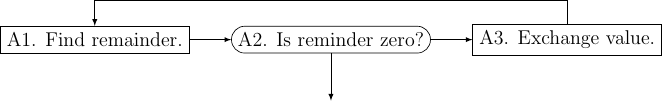
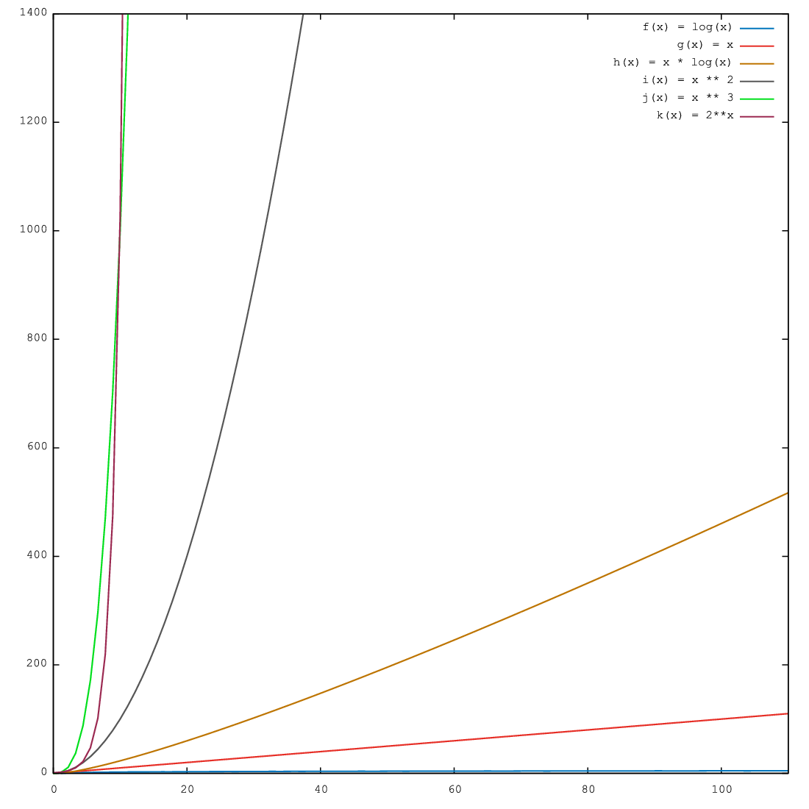
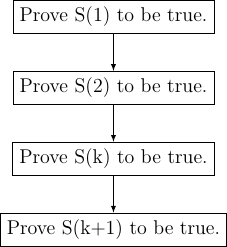

1. Introduction¶
This book is a natural successor of my first book on C99 programming. Before proceeding let me tell you that there are three books which you can read about data structures and algorithm. The first and very deservingly so is the series of books written by Donald Erwin Knuth. The Art of Computer Programming. Please note that Knuth’s books is not for weak-hearted. :P The next in the list is another excellent book Introduction to Algorithms by Cormen, Leiserson, Rivest and Stein. Another very nice book in my opinion is Handbook of Data Structures and Applications edited by Dinesh P. Mehta. Rest of the data structure books are more or less same and will fall in same category.
Since I have written only my first book on C99 the examples will include only knowledge from C99 book. As more languages are covered more examples will be added with those languages.
What is it that makes Data Structures and Algorithms worth our time. Well, when we write software we have to solve practical problems. And we solve certain types of problems. For these problems we have certain solutions and we repeat the solution for similar problems. This behavior leads to reuse of certain types of data structure and algorithms. This also leads to a certain topic known as Design Patterns. However, that is a subject of an entirely different book.
Note that there are three different words in Data Strcutures and Algorithms. Data itself is very important and we have to make sure it is what is most important. Structure is important because that will make sure certain algorithms can be applied in the way should be. Algorithms are important and should be chosen according to data and structure. We really are not much about what type data will have because we really cannot govern that. However, we can choose structure and algorithm for that data. Note that structure and algorithms should be appropriate for particular data in consideration.
There are specific structures which facilitate specific operations if they are used to hold the data. For example, a stack allows to access data only from top. A queue is helpful to realize a life-like queue. Binary trees are helpful for faster searches. Graphs can be used for path-finding and and to solve network problems. These are just few cases which I have cited. The area of data structures and algorithms is immense and ever expanding.
Before we proceed let me tell you that you should refresh your Mathematics because certain sections of this book will be involving, mathematically. Particularly sections which will contain analysis of algorithms. One more important point is that you should have pen and paper with you while trying to study this book. Believe me it will help you a lot as I have experienced it myself. Also, Knuth recommends that too. :-)
I expect that you have learned GDB and Valgrind from as suggested in my last book. Be ready for some debugging in case programs give you trouble.
The way the book will present the concepts is that we will take up data structures and algorithms. I will draw diagrams and apply algrithms on those algorithms on those diagrams because you know a picture is worth thousand words. :-) The language used to describe the data structures and algorithms will be C99. Perhaps later more examples in different languages will be given. Algorithms will be first described using pseudo code then real code.
1.1. Problem to Solution¶
Usually while programming you will face the situation when you have to write a program to solve a problem. You will end up using few data structures and a few algorithms to solve that program. This book describes the most common data strutures and algorithms which have evolved over several centuries of mathematical work by mathematicians. Given a problem we build a model of solution (read program) in our mind. The details of that mental model varies from individual to individual. Once that mental model is built our brains orientation is fixed to a certain way of thinking. Now because of this we choose certain data structures and algorithms and try to find out solution using data starutures and algorithms chosen. Sometimes we are successful other times we fail may be partially maybe fully. Now the most important thing when we fail is to think over the problem again and get a fresh thinking. So better take a break. This is most serious advice I can give. Whenever you have difficulty solving a problem for more than 30 minutes take a break. This will reset your thinking and allow you to think in new way and you can try to find the solution afresh.
1.2. Preliminaries¶
First a bit of history. The word algorithm comes from the name of the 9th
century Persian Muslim mathematician Abu Abdullah Muhammad ibn Musa
Al-Khwarizmi. The word algorism originally referred only to the rules of
performing arithmetic using Hindu-Arabic numerals but evolved via European
Latin translation of Al-Khwarizmi’s name into algorithm by the 18th century.
The use of the word evolved to include all definite procedures for solving
problems or performing tasks. The question is a what is an algorithm.
Knuth’s first volume of The Art of Computer Programming gives a very detailed
definition. What I will say is that an algorithm is a finite seuquence of
well-defined operations on some input data which produces an ouput in finite
amount of time. Let us consider the classic Euclid’s algorthim for finding
greatest common divisor for two numbers. This algorthm has been described
by Euclid in his book Elements (book vii, propositions i and ii). Given
two numbers say a and b following steps need to be executed
for finding remainder. Please see how I am going to describe the algorithm.
Algorithm A (Euclid’s algorithm). Given two positive integers a
and b find the greatest common divisor, i.e. the largest positive
integer which evenly divides (remainder after division is 0) both a
and b.
A1. [Find remainder.] Divide a by b. Say r is remainder
(r will certainly be \(0\le r<b\).).
A2. [Is it zero?] If r = 0 terminate execution b is the GCD.
A3. [Exchange values.] Set a = b and b = r. Goto step A1.
I will use the word A for alorithm. This algorithm will have a monotonically increasing suffix which will be a positive integer. When these algorithms are later referenced a hyperlink will be made to refernce back to the algorithm.
Some algorithms will have flowcharts given for them. For example, given below is the flowchart for Euclid’s algorithm.

Euclid's algorithm as a flowchart.
Let us see a C99 program which evaluates GCD of two numbers. Given below is the sample code.
#include <stdio.h>
int main()
{
int a=0, b=0, r=1;
printf("Enter two positive integers separated by space:\n");
scanf("%d %d", &a, &b);
while(r != 0) {
r = a % b;
if(r == 0)
break;
else {
a = b;
b = r;
}
}
printf("GCD is %d\n", b);
return 0;
}
Note that terminating condition for our program is that remainder becomes zero. Typically we initialize variables with value 0 in C99 but in this case it must be non-zero. Now let us look at some desirable properties of an algorithm.
1.3. Efficiency¶
There can be several algorithms to achieve the same effect on a particular set of data. However, the two methods may have different requirements on time constraint. One may take more or less or equal time than the second one. We definitely always want an algorithm which consumes less time. Time may not be only contraint all the time. Sometimes we may be bound by amount of memory available to use. This may forbade us from using those algorithms which consume more memory even though they run faster. So there are two types of complexities which are in question time and space.
There are two ways to measure time complexity. One is called big-O notation and another is called amortized complexity. These notations are typically wrtten as \(O(n), \Omega(n)\) and \(\Theta(n)\). The symbol:math:O was first introduced by number theorist Paul Bachmann in 1894, in the second volume of his book Analytische Zahlentheorie (“analytic number theory”). The number theorist Edmund Landau adopted it, and was thus inspired to introduce in 1909 the notation \(o\); hence both are now called Landau symbols. The big \(O\) was popularized in computer science by Donald Knuth, who re-introduced the related Omega and Theta notations.Knuth also noted that the Omega notation had been introduced by Hardy and Littlewood under a different meaning “\(\ne o\)” (i.e. “is not an \(o\) of”).
There are three types of complexities of an algorithm. Best case, average case and worst case. In \(O(n)\) notation worst case performance of an algorithm is considered. However, an amortized complexity does not work like that. In an algorithm an operation may be costly but then its frequency may be less. Amortized complexity takes care of this fact and tries to balance the complexity value. Therefore big-O notation is useful when worst case performance is entirely unacceptable otherwise amortized complexity can be used.
Now let us try to understand what is big-O notation and how to compute it. Consider two functions \(f(x)\) and \(g(x)\). Let us assume that these functions operate on a subset of real numbers. Then in big-O notation \(f(x)\) is written in terms of \(g(x)\) as follows:
if and only if there is a positive constant \(K\) such that for all sufficiently large values of \(x,~f(x)\) is at most K multiplied by \(g(x)\) in absolute value. That is, \(f(x)~=~O(g(x))\) if and only if there exists a positive real number \(K\) and a real number \(x_0\) such that
We typically do not say that we are concerned with growth rate as \(x\) goes to \(\infty\) and we simply write \(f(x) = O(g(x))\).The notation can also be used to describe the behavior of \(f\) near some real number \(a\) (often, \(a = 0\)): we say
if and only if there exist positive numbers \(\delta\) and \(K\) such that
If \(g(x)\) is non-zero for values of \(x\) sufficiently close to \(a\), both of these definitions can be unified using the limit superior:
if and only if
To explain how we compute \(O(n)\) let us see an example. Consider a polynomial function with all positive coefficients. Say our polynomials is somthing like \(f(x) = a_0x^n + a_1x^{n-1} + a_2x^{n-2} + ... + a_{n-1}x + a_n\). We can very safely say
Therefore we can say \(f(x) = O(x^n)\).
Given below is a plot of some most common functions encountered in algorithms.
{kind=link}
Note that plot of log(x) is barely visible in output. As you can clearly
see \(log(x)<x<x*log(x)<x^2<x^3<2^n\).
As \(O\) -notation gives upper bound similarly \(\Omega\) -notation gives lower bound.
\(g(n) = \Omega(f(n))\) means there exists two constants \(L\) and \(n_0\) such that
\(g(n) \ge L|f(n)|\) for all \(n> n_0\).
If we want to write exact order of growth without being accurate about constant factors \(L\) and \(K\) then we use \(\Theta\) -notation.
\(g(n) = \Theta(f(n)) \Leftrightarrow g(n) = O(f(n))\) and \(g(n) = \Omega(f(n))\) implying \(\Theta\) -notation gives both upper and lower bounds.
In computer science for algorithm analysis we are almost always worried about big-\(O\) complexity because it gives upper bound i.e. for large set of input how the algorithm will behave.
Continuing this let us discuss a bit more about big-\(O\) notation. The problem with big-\(O\) notation is that even though it talks about two contants \(x_0\) and \(K\) it does not give any hints about there values or how to compute them. It also does not put any restriction on the values of these constants not gives any guidelines when there are many such values.
There is also space efficiency or memory efficiency. There are times when the devices we use do not have a lot of memory then we need to find algorithms which are efficient memory-wise. For example, there are two very good algorithms for sorting an array of values (or string) quick sort and merge sort. However, consider the case when we have less memory than the array then neither of these algorithms can be used. One of the sorting algorithms among many is external sort. This technique is old because in earlier devices memory was less and usually data to be sorted was more.
1.4. Examples of Asymptotic Complexity Computation¶
In an algorithm analysis we have to consider all operations although many times
if the code is simple you can just see and guess the complexity. However, in
case of complex code you will find it difficult to do that. For example
consider the following code which computes sum of n numbers stored in an
array.
for(i=sum=0; i<n; ++i)
sum += a[i];
First we have two initializations for i and sum. Let cost of assignment
be \(C_1\). Then i is incremented from 0 to n-1. Let cost of
increment be \(C_2\). Now There are n additions and n assignments
for sum. Let cost of addition is \(C_3\). So total cost is
\(n*(C_1 + C_3)\). Thus total cost is \(2*C_1 + n*C_2 + n*(C_1 + C+3)\)
i.e. \((2+n)C_1 + n*C_2 + n*C_3\). These constants \(C_1, C_2\) and
\(C_3\) can be measured in terms of clock cycles. Thus complexity is
\(O(n)\).
As you can guess if we have nested loops complexity wil increase in terms of power of \(n\). However, the complexity may not increase exactly by integral power.
1.5. Simplicity¶
It is not enough for an algorithm to be efrficient from the perspective of memory and time but it should also be simple enough to implement. For example, splay-trees are very good for maintaining fast search time. But the implementation is complex compared to a Red-Black tree or AVL-tree therefore they are usually not preferred. However, this is not the only reason. I will let you know more detail when we discuss trees in their own chapter.
1.6. Problems on Complexity¶
For each of the following pairs of functions \(f(n)\) and \(g(n)\), either \(f(n) = O(g(n))\) or \(g(n) = O(f(n))\), but not both. Determine the case.
- \(f(n) = (n^2 - n)/2, g(n) = 6n\).
- \(f(n) = n + 2\sqrt{n}, g(n) = n^2\).
- \(f(n) = n + \log n, g(n) = n\sqrt{n}\).
- \(f(n) = n\log n, g(n) = n\sqrt{n}/2\).
- \(f(n) = n + \log n, g(n) = \sqrt{n}\).
- \(f(n) = 2(\log n)^2 , g(n) = \log n + 1\).
- \(f(n) = 2(\log n)^2 , g(n) = \log n + 1\).
- \(f (n) = 4n \log n + n, g(n) = (n^2 - n)/2\).
Which of the following cases are true and which are false?
- \(n^2 = O(n^3)\).
- \(n^3 = O(n^2)\).
- \(n\log n = O(n\sqrt{n})\).
- \(\sqrt{n} = O(\log n)\).
- \(\log n = O(\sqrt{n})\).
- \(n^3 = O(n^2(1 + n^2))\).
- \(1/n = O(\log n)\).
- \(\log n = O(1/n)\).
- \(\log n = O(n^{-1/2})\).
- If \(f(n) \sim g(n)\), then \(f(n) = \Theta(g(n))\).
- If \(f(n) = \Theta(g(n))\), then \(g(n) = \Theta(f(n))\).
Give proof for following:
Does \(n^{\log n} = O((\log n)^n)\)?
Does \(n^{\log n} = \Omega((\log n)^n)\)?
Does \(n^{\log \log \log n} = O((\log n)!)\)?
Does \(n^{\log \log \log n} = \Omega((\log n)!)\)?
Does \((n!)! = O(((n - 1)!)!(n - 1)!^{n!})\)?
Does \((n!)! = \Omega(((n - 1)!)!(n - 1)!^{n!})\)?
Does
\[O\left(\left(\frac{n^2}{\log \log n}\right)^{1/2}\right) = O(\lfloor\sqrt{n}\rfloor)\]Does \(2^{(1+O(1/n))} = 2 + O(1/n)\).
Prove that if \(f_1(n) = O(g_1(n))\) and f_2(n) = O(g_2(n)), then \(f_1(n) + f_2(n) = O(g_1(n) + g_2(n))\).
Prove that if \(f_1(n) = \Omega(g_1(n))\) and f_2(n) = Omega(g_2(n)), then \(f_1(n) + f_2(n) = O(g_1(n) + g_2(n))\).
Prove that if \(f_1(n) = O(g_1(n))\) and f_2(n) = O(g_2(n)), then \(f_1(n) + f_2(n) = O(max\{g_1(n), g_2(n)\})\).
Prove that if \(f_1(n) = \Omega(g_1(n))\) and f_2(n) = Omega(g_2(n)), then \(f_1(n) + f_2(n) = \Omega(min\{g_1(n), g_2(n)\})\).
Prove or disprove: For all functions \(f(n)\) and \(g(n)\), either \(f(n) = O(g(n))\) or \(g(n) = O(f(n))\).
Prove or disprove: If \(f(n) > 0\) and \(g(n) > 0\) for all \(n\), then \(O(f(n) + g(n)) = f(n) + O(g(n))\).
Prove or disprove: \(O(f(n)^{\alpha}) = O(f(n))^{\alpha}\) for all \(\alpha \in \mathbf{R^+}\).
Prove or disprove: \(O(x + y)^2 = O(x^2) + O(y^2)\).
1.7. Mathematical Induction¶
Mathematical induction is a powerful technique to prove certain mathematical equalities and inequqlities. To analyze an algorithm we can use mathematical induction. There will be many times when analyzing an algorithm mathematical induction will come handy. Many of the readers may be familiar with it and many may not. Therefore, I will start with basics of this particular technique. We will then develop some basic formulas to be used in this book. We use mathematical induction technique in following way.
Given a statement \(S(n)\) we first prove \(S(1), S(2)\) and \(S(3)\) are true. We then assume \(S(k)\) is true. After that we prove \(S(n+1)\) to be true. After this we can draw conclusion that \(S(n)\) is true for all \(n\).
Consider a statement that
now if we have to prove this then we will perform following step:
Algorithm A1
A1.1 Prove for \(S(1)\)
A1.2 Prove for \(S(2)\)
A1.3 Assume \(S(k)\) to be true.
A1.4 Prove \(S(k+1)\) to be true.
Therefore for step A1.1 \(S(1) = 1 = \frac{1*2}{2}\). So \(S(1)\) is true. For step A1.2 \(S(2) = 1 + 2 = 3 = \frac{2*3}{2}\). Now \(S(2)\) is also true. Let us say
now \(S(k+1) = k*(k+1)/2 + k+1 = (K+1)*(k+1+1)/2\). Hence, by mathematical induction we have proven the statement.
Therefore we can draw following flowchart for mathematical induction.

Flowchart for mathematical induction.
Let us consider another simple example which will further help boost our foundations of mathematical induction.
Consider a statement saying
Now we first find \(S(1) = 1 = 1^2\) which is true. For \(n = 2\) we have \(S(n) = 1 + 3 = 4 = 2^2\). Now let us assume it is true for \(k\). Now let us try for \(k+1\). \(S(k+1) = k^2 + 2k + 1 = (k+1)^2\). Therefore, we have proven the series to be true for \(S(n)\).
You can visualize this using a geographical representation too. I would like to ask the reader to find the visual diagram as an exercise.
1.8. Some Basic Mathematics¶
Let us see a way to find sum of first \(n\) numbers. Typically we use symbol \(\sum\) to denote the sum. The following notations are used.
\(\sum_{1\le i\le n}i\), \(\sum_{1\le i\le n}a_i\) and \(\sum_{i=0}^na_i\) to denotes the sum of numbers 1 to \(n\) and series \(a_1+a_2+a_3+...+a_n\) respetively.
Let us try to find sum of first \(n\) numebers using another method which will not use mathematical induction.
The same can be written by reversing the series in following manner
Now if we sum the series we will get following
So now we can clearly get our result mentioned in the above section.
Before we proceed let us take a look at following solution:
Now by the same analogy let us try to find out sum of squares.
There is one more generic notation \(\sum_{R(i)}a_i\). Here, \(R(i)\) is any relation which involves \(i\). The notation here means sum of all \(a_i\) for \(i\) for which relation \(R(i)\) is true. Now let us study some basic laws with this notation.
Distributive Law, for multiplication of such sums:
For example consider the follwing case:
Interchanging order of summation:
The reader is to prove this. This is left as an exercise.
Change of variable:
Hacking the relation:
Given these four rules reader is encouraged to find the sum an arithmetic and an geometric progression.
I think I should stop here now and ask the reader to brush up his math skills. These derivations are just a glimpse of what you will need to analyze the algorithms.
1.9. Algorithms and ADT Implementation¶
An ADT is a generalized form of data type not necesssarily integers or real numbers. For example, a set of boolean values used to represent arbitrary binary or ternary numbers are abstract data types. An abstract data types can be implemented by compound types of programming languages such as structures in C or classes in C++ or such object-oriented languages. A more succinct (and mathematically close) definition would be that we can think of ADTs as mathematical model with a collection of operations defined on that ADT. When we define ADT as a mathematical model, we are not concerned with time or space efficiency. Time or space complexity are problems of implementation not modelling. It is quite possible that a certain ADT cannot be implemented on certain hardware or software. But by specifying the mathematical and logical attributes of a data type or structure or class, the ADT serves as a good starting guideline to programmers at least.
Different books choose different ways to formulate ADT but in this book I will focus on implementation using C programming language. Thus we will be dealing with more code than abstract concept.
Usually algorithms take form of functions and abstract data types take form of classes and structs when written as a program. The reason for this is ADTs can usually be represented as nouns while algorithms can be represented by verbs. Remember algorithm operate on ADTs. Both this type of conversion helps us in generalization and encapsulation. I will not go into details as to how this conversion achieves this generalization and encapsulation because that is out of scope of this book.